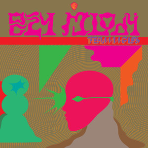
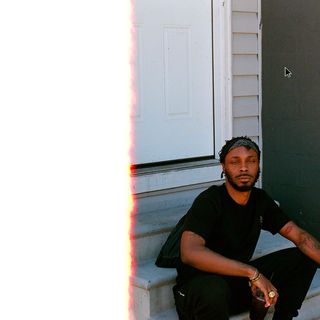

In 2015, I was a high schooler surrounded by music and musicians, looking for a way to parse through my feelings about each new album and artist I heard. At the pace I was consuming new projects, sometimes it was hard to even recall favorites. My solution, one that I'm grateful I came up with to this day, was to start cataloguing, rating, and reviewing everything on RateYourMusic.com. It helped me learn how to write in my own voice and what I really liked about the art that moved me.
It's worth mentioning that these are from so long ago that I don't necessarily still agree with the content or the score. As such these writings are not compiled in the music index , though these albums may find their way there if covered again in the future. This compilation also isn't comprehensive - the vast majority of catalogued music only resulted in a rating. If you want the whole shebang (all 1174 releases), you can visit the RYM profile here .
Dr. Dog - Shame, Shame (2010) - ★★☆☆
An average little indie pop rock album with some light psychedelic and bluesy influences prominent on some tracks. Interestingly enough, the songs that embraced these influences were not only the most distinctive on the album, but also my personal favorites, which led me to wonder about why they insisted on the fairly uninspired standard indie fair for the rest of the LP. Couple very annoying duds on here as well, "Shadow People" in particular, but on the whole, it's not bad. Just a tad boring.
March 28, 2015
Waka Flocka Flame - Flockaveli (2010) - ★★★☆
Nearly any and all inconsistencies with Flockaveli are erased by how fun this album is. Pure adrenaline-pumping trap from start to finish. Suspension of disbelief is almost necessary to enjoy Waka's music, but when it clicks, it clicks hard. One of the best "car music" albums ever; every song is quotable and loud. Unfortunately, other Flocka albums aren't as consistent as this, but the fact that this one exists pretty validates his popularity and presence in the hip-hop industry by itself.
March 28, 2015
alt-J - An Awesome Wave (2012) - ★½☆☆
An Awesome Wave reads like a cookbook for the "smart pop album": instrumental or a capella interludes; quirky, atypical vocals; a combination of traits from two generally unrelated genres (in this case, folk and what I think is probably dubstep); and forced 'quiet' sections where they show off average lyrics like some exposé. Toss in a cryptic band name and album cover and you've got a stew going.
That said, it's not terrible, just inauthentic. It feels like the members of the band (who I'm sure are individually talented) are mostly preoccupied with appealing to Pitchfork staff. It's unfocused and a bit self-absorbed, and if it shed a little off of either of those, it could be a great foundation going forward for Alt-J. Tracks like "MS" and "Taro" show that these guys have the tools to be a pretty successful dream-pop outfit, but their recent releases seem to be pretty deadset on advancing whatever brilliant ideas they had that led to this failure.
June 17, 2015
Pages - Pages (1978) - ★★★☆
Equal parts Earth, Wind & Fire and Rick Astley. Funky, great riffs, great vocals, and a ton of fun to listen to. It obviously feels dated, and with cheese comes both greatness and duds, but the groove present here is usually enough to overcome some of those issues. Never thought I'd thank vaporwave for anything, but looking for the sample on "Library" by Macintosh Plus took me on a journey across time square onto the set of a 1978 softcore porn set.
June 17, 2015
Makeout Videotape - Ying Yang (2010) - ★★☆☆
This is pretty much Mac DeMarco's Overly Dedicated . Ying Yang is a decent release that shows a lot of what he'd build on in the future, but also a lot of what we should be glad he didn't. I will say this: the lo-fi production suits he and Calder very well, and fans of Mac will definitely enjoy a lot of this because of it. It's got lots of rookie mistakes and some lazy songwriting in places, but hey, it grooves, and that's what you're here for, right?
June 17, 2015
Tyler, the Creator - Bastard (2009) - ★★½☆
This is such a hot-and-cold record. On one hand, it obviously need to be lambasted for its immaturity. Bastard is littered with references to raping women, killing innocent people, and generally violent behavior, usually meant in jest and yet much more disturbing that it's coming from a 17-year-old. And on the other, it's amazing how much talent is present in this record when Tyler chose the right avenues.
This LP has many flaws, and just about half of these songs are flat-out bad. But there's something about the naivety and youthfulness in these tracks that make the whole thing mostly entertaining. When Tyler is focused and not just saying edgy stuff for the sake of saying edgy stuff, there's actually good musicianship here. This is again juxtaposed by the laughably low-quality synths and percussion; the whole records pushes stock Frooty Loops effects to their limits. It's mixed like shit, and is pretty lo-fi in its production (which actually suits it quite well).
I'm not sure why I enjoy this thing at all. It's corny, it's childish, it's stupid, but I can't think of a single thing like it. Tyler's clearly got a story to tell here - and the production talent to get it across - but immaturity and a desire to pad his project with ironic banger-types hold it back from something greater.
June 18, 2015
Ty Segall - Ty Segall (2017) - ★½☆☆
I really cannot say whether or not Ty Segall actually has it in him to be great - all I know is that I really am not enjoying these cobbled-together releases every year. It seems he just peruses bands from 1960-1975 and then writes a song in dedication, ad infinitum, and then sells the most recent 10 every 6 months. Completely directionless, totally worthless solos and vocals, and only really gets fun when he turns the energy up, which is like 4/9 songs here. I think most should pass on this one.
January 24, 2017
Wiley - Godfather (2017) - ★★½☆
This is a bombastic collection of songs by Wiley at his most contemporary, for better and worse. The merging of grime and trap music seemed pretty inevitable, and there is some fair respect to both the origins of the UK hip-hop scene and the developments of drill in recent years there.
What holds Godfather back from real acclaim is simply its length - there are 5 shockingly bad songs that hold this back from being among the better albums of the year. If he can drop the filler, Wiley may be headed towards a career revival... but it is likely that his best effort at one is Godfather itself.
January 24, 2017
The xx - I See You (2017) - ★★½☆
The progression of The xx from quaint alt-pop trio to garage-R&B outfit has become more apparent as Jamie xx has taken over the mainstream from 2012 to present. With Jamie dominating the club scene for all of 2015 and 2016, surely his solo influences would not hold back on newer work with the band that gave him his name.
The xx's evolution is only half-successful here, but the highs show glimpses of a totally different identity we are accustomed to. Whether it's the Beatles sample on "Say Something Loving", the dance beat in "On Hold", or the blaring horns on the opening track "Dangerous", it seems there is some creative impulse left in the tank of what many thought would be a band with not much left to explore. How long Jamie will pursue his ventures into dance-pop with The xx - and how successful he'll be - is another question altogether, though.
January 25, 2017
John Coltrane - Blue Train (1958) - ★★☆☆
I was once assigned this album to review back in 6th grade as a make-up for having to miss my band recital. I was able to pick any album from a list, as long as it featured my instrument, the tenor sax, front and center.
I ended up picking Blue Train because it was my prick director's favorite album of all time, and because I needed some brownie points (the sax section was in deep shit at the time - I ditched practices often because I took my studies more seriously). As I was only learning classical pieces at the time, you could say this was my first meaningful exposure to jazz, ever. And at the time, I hated it.
Today marks the first time I've revisited Blue Train since then. I'm much more familiar with Coltrane now than I was then, and although I don't play much sax nowadays I do have a strong appreciation for the instrument. However, having heard a number of Coltrane's more 'standard' hard bop affairs, this one falls quite flat in comparison.
It peaks on the bombastic "Locomotion" in my book - Coltrane finally lets loose and the band is tight, paving the road for him to take over and dance a little. Unfortunately, this is just about the only piece where John isn't noticeably lackadaisical ("I'm Old Fashioned" and the title track being particular for me). I'm all for restraint on the player's part on behalf of letting the ensemble's groove shine, but the pieces here are not particularly engaging even during the solos. A solid outing nonetheless, but not one of Coltrane's finest by any means.
April 1, 2017
Lizzy Mercier Descloux - Press Color (1979) - ★½☆☆
One of the more confusing records I've ever heard. The first two tracks promise a pleasant, if standard art punk experience with believably tight mixing. Press Color is obviously well-produced, with crisp drumming and the same droning electricity in the guitars often found in albums of the same style.
Unfortunately, Descloux spends the remainder of the project... struggling. A majority of her vocal performance here is breathy scatting and the minimalist instrumentation gives her the spotlight - exacerbating even minor annoyances to unbearable degrees. "Jim on the Move" especially stands out for its brashness - 2 and a half minutes of breathy pants that goes absolutely nowhere. Would-be hits crumble to dust in seconds.
While many may be able to trace and appreciate Descloux's origins in No Wave and her commitment to bringing that vocal style to a more structured style, as it stands, this is a failure. Another cult classic from the late 70s that I can't manage to understand.
August 16, 2017
Herbie Hancock - Fat Albert Rotunda (1970) - ★★½☆
A sort of misfit album in Herbie's discography, recorded as a soundtrack to a TV special after his elegant modal jazz success but before his second career as a sonic astronaut. While it has glimpses of a bombastic, New Orleans-influenced sound true to the source material, it never commits, comfortable in "merely" having a good time and playing loud. What's left is a good, if relatively nondescript outing in Hancock's career, though it is an interesting first step in his life after Blue Note.
August 16, 2017
Herbie Hancock - Maiden Voyage (1966) - ★★½☆
Aptly named, Maiden Voyage does exert an air of sophistication and adventure that can be reminiscent of a cruise-ship ballroom. While nothing here dips below "pleasant", its complacency in its coolness can sometimes make active listening feel unrewarding - especially towards the middle of the session. Despite this, the title track remains an all-time highlight (and culturally significant jazz standard) to this day. I only wish I could say the same for the others.
August 17, 2017
J Dilla - Donuts (2006) - ★★★☆
It may be 2017, but I've actually been listening to this album near-religiously for close to 5 years. I've always considered Donuts to be the perfect counterexample to the rating system that I've been building on for however many years now. Perhaps it's even missing the point a bit to dissect it into pieces like this. Oh well.
I generally try to divorce the musical content of a release from the context of its development, to avoid getting caught up in a narrative that may influence my opinions of the music itself. However, I find it to be an exercise in frustration trying to remove the context of the producer's own death from an album that nails such a vibrant and hopeful tone. Dilla put this together to help his loved ones cope with his own passing, bidding them farewell and telling them to remember the bright moments of life. It is simply not worth my time to pretend that this additional emotional impact isn't present.
On the musical side of things, my problem with the vast majority of instrumental hip-hop tapes - Dilla's earlier work definitely not withstanding - is a personal, subjective inability to determine what the point of its inception was. Most are just a compilation of assorted instrumentals that were definitely made to be rapped over and not for individual commercial release, and that always felt like a hollow investment to me. Donuts is not completely free of these issues, but it does make massive strides towards fixing them, mostly by way of simply giving a shit.
The transitions are smooth. The samples chosen are deliberate and are, very critically, given the chance to shine by themselves. There are no 45-60 second lulls in the tracks where it's obvious a verse should have been; in fact many tracks hardly extend past that length in their entirety. There is an emphasis on incorporating subtler breaks with soul, funk, and gospel sampling creates a cohesive bounce. Perhaps most creatively, some of the vocals here are chopped to serve as a surrogate voice for Dilla himself - "Don't Cry" being an especially poignant example. It is inspiring to me just how much it's apparent J used Donuts as an emotional outlet on his deathbed.
However, with a total roster of 31 tracks (the majority of which are simply 1-2 minute ideas that are gone before you can think too hard), it seriously would not have hurt to remove some jarring inclusions, especially "Thunder", "Walkinonit", "The Twister", and "Da Factory". The more frustrating part is they aren't even poorly-composed or uninteresting, just unfinished pieces that are difficult to enjoy by themselves without thinking of what could have been.
Still, Donuts is soulful, emotional, groovy, and escapes regular genre trappings by being rewarding in both casual and critical listenings, and it safely earns the merit of its reputation.
August 23, 2017
Tim Follin & Geoff Follin - Plok! (2004) - ★★☆☆
While I very much dislike the plump, bouncy bayou-cabin intonation of this soundtrack (and similar issues prevent me from fully understanding the works of Grant Kirkhope), I can understand that most of that is due to what sounded and worked best on SNES hardware. The melodies are pretty close to objectively good, but their presentation here leaves a lot to be desired. But then again, tracks like "Beach"? Sheer Follin Brothers genius.
September 17, 2017
John Cale - Paris 1919 (1973) - ★★½☆
This eccentric early 70s breakout album from Velvet Underground contributor John Cale is a little more legend than it is reality. Cale's songwriting is tight and the Welsh folk influence gives the entire album a bit of a hazy, maritime atmosphere, but I honestly don't feel this does too much to differentiate itself from similar projects and outfits of the style and time, especially those from the British Isles. It's enjoyable, but I do not fully understand the lofty praise it's occasionally associated with.
September 19, 2017
Mississippi John Hurt - Avalon Blues (1979) - ★★★☆
An earnest collection of 1928 recordings from the Okeh Electric days of Delta blues folk hero Mississippi John Hurt. It's a concise and atmospheric compilation that has a beautiful DIY charm that just drips from the modest southern twang in Hurt's voice. Ture to his roots in the Mississippi Delta, the lyrics all portray realistic, blue collar problems - and it really does feel like music made for the working class. There is an everyman root to it all that is effortlessly attractive.
September 20, 2017
Chris Lucey - Songs of Protest & Anti-Protest (1965) - ★★★☆
Chris Lucey is the original nom de plume of Bobby Jameson, a name recently thrust back into the spotlight because of Ariel Pink's new project named in honor of his passing. Jameson was a troubled artist that left the music industry depressed and addicted after being financially stiffed by his record label overlords for years, even with his largest successes.
This album was basically a repossession project by Surrey Records, who needed to quickly replace 10 songs by a Chris Ducey after finding he was under contract with another label. They got some random 20-year-old willing to write and record an album under the name Chris Lucey, and write songs named the same as Ducey's original setlist, to minimize rebranding costs for an already broke record label. What young Bobby was able to assemble with a nonexistent budget and a time crunch is incredibly impressive.
While coming in only a little over 26 minutes from front to back, the songs here are rich with healthy influences of the time. You can hear Arthur Lee and Stan Getz in equal proportion, and some of the arrangements, especially on the opening track and "Girl From Vernon Mountain", just knock the intended style out of the park in execution. And while some songs like "I Got the Blues" and "I'll Remember Them" are decidedly not as adventurous for the time, they are still well-played and performed. I appreciate Ariel Pink for honoring such an unfairly obscured prodigy, because he was certainly worth remembering.
September 26, 2017
James Blake - James Blake (2011) - ★★★☆

A skinny British kid is, secretly, Nick Drake meets D'Angelo. Effortlessly soulful - not only without a reliance on lushness but a complete dismissal of it. Completely one-of-a-kind, and well ahead of its time ("I Mind" even predicted the dancehall revolution that would arise later in the decade). James Blake's debut has not only aged gracefully, but its confident disregard of almost everything happening in music at the time of its release makes it a fascinating historical moment.
September 30, 2017
King Krule - The OOZ (2017) - ★★★☆

Much less immediate than its predecessors, King Krule's The OOZ is a hazy, abstract project soaked in the familiar melancholy of his previous work. There is a noticeably larger focus towards mood and atmosphere, and the influences spread far and wide. There are flecks of jazz (think In a Silent Way ), ambient, early-80s art punk, and a sparse, depressive production style reminiscent of Arthur Russell, and despite it all, it never feels even slightly divorced of the 2010s indie paradigm.
But make no mistake, this is assuredly not the same Archy Marshall that arrived on the scene in 2012. While the foundation of a crooning, sombre youth persists throughout, this is much more contemplative, more hesitant, and perhaps even a bit fleeting because of it. It is grey clouds, hot tea, warm sweater, cold rain, white-noise-on-the-TV music; for better or worse, those days are calming, but immobile and consequently indiscernible from one another.
Someone much more out of their self could argue that those such days hardly feel like days at all, almost more of a mood, untethered to time... and perhaps that's the best way I could describe The OOZ , as well.
October 20, 2017
William Basinski - A Shadow in Time (2017) - ★★½☆
Another moody, evocative effort from tape loop pioneer William Basinski. The title track was written as a tribute to the late David Bowie, and droning, tattered saxophones lull the listener to sleep. It's like Blackstar written in lullaby form.
The title track is, I swear to god, the amalgamation and deconstruction of every motif from Jeremy Soule's soundtrack for The Elder Scrolls IV: Oblivion , which has great ambient pieces in its own right. While it can meander a bit toward the center, a ghostly grand piano recenters the abstract chaos into an empty chamber hall. Very interesting and visually evocative, if less peculiar than the opener.
A Shadow in Time is total treat for even passive ambient listeners. Lush, somber, and isolated.
December 7, 2017
Bjork - Utopia (2017) - ★★★☆

I don't really understand birds all that well, but I like them. They're dichotomous in that for what are usually colorful, singing flutterers, they hide a rather angular brain. Their heads flicker around like androids receiving movement instructions, and they are rather vicious - even the pretty ones. In many ways, I feel similar to them: fairly left-brain beings that appreciate and live through song. I suppose Bjork feels similarly, and I'm glad someone as capable as her followed through on such a curious inspiration.
I am becoming increasingly worried by the fact that I compare all music to video games, but Utopia evokes similar imagery to that of the Sky Temple in The Legend of Zelda: Twilight Princess . For the unfamiliar, it's a massive, organic, and slightly dilapidated aviary in the sky populated by goofy and intelligent alien-bird-people. As peaceful as it sounds, there is something... unsettling to it. An angularity. The creatures walk on the walls and ceilings when unattended. The music, despite its classical instrumentation, is fairly twitchy and indeterminate. I'm not sure what Arca has been up to lately, but I wouldn't be surprised if some Zelda was in there somewhere.
Despite the dysto-classical fantasy imagery, mostly indebted to some stellar flute work by a 12-piece section curated by Bjork herself, there is a pace here - a clear energy driven by Arca's unbelievable deconstruction of this avian garden idealism. It all at once sounds like something from the distant past and future, and Bjork sends it into overdrive with some of her best vocal performances in years, and particularly topical lyrics about modern, temporary love. It's a "Tinder album", as she once described, but I can't help but feel this would have been just as pertinent in 1917 and 2117.
December 9, 2017
The Flaming Lips - Oczy Mlody (2017) - ★★☆☆
Hazy, lo-fi, low-tempo, synthy dream-pop that could be confused for a 1960s science doc at times. Some cool production tricks show (very small) flashes of the seemingly unlimited creative energy the Lips rode back in the late 90s and early 00s.
Honestly, I think this album got it a little too harsh on release because of (deserved) Wayne Coyne backlash from the Dead Petz era. Miley actually shows up on the last song here to absolutely no avail - nothing could save that song from the second it was finished. So perhaps I can see why those disappointed with the Lips in the 2010s are still upset.
Still, while not always impressive, and occasionally a bit annoying (looking at you, "We a Famly"), Oczy Mlody has its moments, and I think that's good enough.
December 9, 2017
Migos - Culture II (2018) - ★★☆☆

I kind of in awe that Migos had this much material lying around that they thought would be commercially viable. Despite my admiration for their prolificity, I must agree with the consensus reception to Culture II that its length is very much to its detriment. This thing is loaded with filler tracks with no memorable hooks, top-40 pandering, low-effort features, and re-treads of similar ideas from its predecessor.
But there is worthwhile content here to be had, especially for fans. "Supastars," "Stir Fry," "Flooded," "Movin' Too Fast," and "Made Men" are reminiscent in quality to the best moments on the original Culture . They're elaborate, well-produced, and have an aura of unattainable lavishness that Migos has embraced in recent years.
This brings me to my last point - that this is, to me, of no discernible difference in quality to Culture , a comparison that has circulated around the internet on forums and social media since this release. The first installment was littered with the exact same effort problems that reverberate through this release, especially in comparison to a majority of Migos projects since 2014. If you're a fan of Culture , you have something to be happy about: this is the same thing but twice as long.
February 7, 2018
Ty Segall & Freedom Band - Freedom's Goblin (2018) - ★½☆☆

Apparently this album's main concept is the idea of "not being allowed to say no to ideas", which I found pretty funny, as I thought all of his other albums had the same blueprint.
This is a collection of 19 songs spanning 75 minutes from probably the most prolific and least quality-conscious rock musician of this decade, and that's all you really need to know.
February 16, 2018
JPEGMAFIA - Veteran (2018) - ★★★☆
A pretty endlessly-replayable romp through the ridiculous brain of one former inmate and US soldier JPEGMAFIA (hence, Veteran). The diversity of this thing is pretty great, with great pacing and momentum shifts over the course of a healthy 47-minute run.
The comparisons JPEGMAFIA usually gets are endless, so I'll abridge it by saying this is very much an alt-experimental 2010s rap project. Even still, Veteran finds unique footing in his percussive presence and (slightly more traditional,) cocksure lyrical delivery. Every single track here, without exception, is a head-nodder, with slick use of off-beats, triplets, and syncopation.
And good lord, this man has some great production libraries assembled. Dozens of samples of video games, oddball dark synths, vocal samples both dug-up and self-recorded. It honestly comes across as a transparent patchwork quilt of everything Peggy listens to in his spare time.
Veteran is pure, raw, and occasionally downright hilarious - and, in my opinion, makes up for any of its inconsistency with pulsating energy and tons of personality. A grower of exponential proportions.
February 24, 2018
Miles Davis - Nefertiti (1968) - ★★½☆

A soothing, simmering display by the Second Great Quintet that has the gang playing looser than you're probably used to - Davis and Shorter command drunken fist twin-dragon melodies that ebb and flow in a hazy dance. It's fairly dissociative, and sometimes comes across as a bit too abstract, but I dare you to try to get the title track out of your head. Or "Fall." Or "Riot." It took me a few listens, but once Nefertiti is in, it's not coming out.
April 19, 2018
Dorothy Ashby - Hip Harp (1958) - ★★☆☆
A very competent straight-ahead project that very seldomly seems to capture the unique element of the frontwoman's unique instrument and tone. The bass work wasn't to my liking - a bit too jumpy and absent-minded - but both Ashby and Wess put on enough of a show to at least recommend in passing for fans of the era.
Definitely check out the gorgeous "Moonlight in Vermont," though. It's the one moment where Ashby's talents really coalesce.
April 24, 2018
Yusef Lateef - The Three Faces of Yusef Lateef (1960) - ★★½☆
An interesting project by Yusef Lateef that aims to fully showcase the triunal-threat of his multi-instrumental range. While his playing is generally brilliant, the pieces picked for the tenor side are a bit dull, and his band is not always as interesting or explosive as they could be - Wright especially.
Lateef does massively succeed in his flute and oboe endeavors, especially on "From Within," which is frankly insane and pretty 1940s-film-soundtrack for a piece written in 1960. It's an inconsistent ride, but a versatile one that explores the talents of an obviously great player.
April 24, 2018
Return to Forever - Romantic Warrior (1976) - ★★★☆
Romantic Warrior is my favorite album to read reviews of - it just gets people in a frenzy regardless of what they think of it. Some believe it to be emblematic of the masturbatory urges of white jazz fusion (Di Meola is the only white man on the roster, so...), while others find it to be a silly and outrageously technical triumph for the group. This album has been discussed for over four decades, so I'm really whispering in a courtroom at this point, but I think it's perfectly fine to think both prevailing sides have some leverage here.
The actual playing on this thing is outstanding. The band is tight as all hell, with Corea and Di Meola stealing the show per usual with blazing melodies and solos over sporadic, occasionally goofy time and key changes. "Duel of the Jester and the Tyrant" has a build-up of something close to 6 minutes of pure Corea/Di Meola pressure, and then the band stops to play at kitschy little sketch that sounds an awful lot like "Koopa Cape" from Mario Kart Wii . You gotta love it.
The arrangements here are weird, straight up, with Corea writing half and the other 3 writing one a piece - usually trying to include some kind of comedic element or overly-dramatic motif. The album shares a very light medieval theme (as evidenced by the artwork and song titles - I can't tell if any musical medieval influence was taken here), but assumes the tone of something closer to Princess Bride than Excalibur . I don't really know how to describe it, but it can definitely occasionally feel like the entire band was playing just to fuck with you. For some more sensitive or picky listeners (and honestly that comprises just about all fusion fans), this could be seen as affronting.
But if you have a sense of humor, can appreciate sheer technical showboating, and have a penchant for racing game soundtracks from the turn of the millenium, you will walk away from Romantic Warrior with your jaw on the floor and a confused smile. For everyone else, well, take a crack at it, at least.
April 25, 2018
Fleetwood Mac - Tango in the Night (1987) - ★★½☆

Fun aside: I picked up this record at a flea market when I was like 14, on name only. I showed my dad what I found and he gave me a worried smile (pretty damn funny in retrospect). That sort of put me off, so I never really sat down and listened until very recently.
The most impressive thing about Fleetwood here is that even when they buy into the most ridiculous trends of the day (which is every single goddamned track here), these guys really do struggle to make songs that aren't catchy. As expected, the tracks that try to emulate the effervescent Whitney Houston are the low points, but everything else is lighthearted and enjoyable with extremely catchy melodies.
I feel like this is a textbook "recommended for fans" entry in their discography, but anyone who has a soft spot for mid-to-late-1980s yacht rock will also find lots to enjoy here. It's about 4 songs of filler away from being a legitimate pop classic.
April 30, 2018
Esthero - Breath From Another (1998) - ★★½☆
Fun fact: the producer and engineer on this album is none other than Doc McKinney, the guy who put together all three of the Weeknd's "Trilogy" of mixtapes as well as Starboy . This somehow makes total sense, as you can see his roots in the weirdo-post-industrial-trip-pop Canadian scene in this album.
Esthero's voice is completely beautiful and clear, and a lot of the songs are exceptionally well-written (tracks 3-5 really stand out in that regard) and McKinney makes pretty consistent choices in production for her outside of the two terrible rappers in the opener. There are multiple times on this record where I felt I might have been listening to a hidden pop classic, but was sobered by a filler track or by a track's over-reliance on (what were considered in 1998 to be) tropey production quirks of the time. Most of the string sections were unwarranted, as well as the industrial-touched tracks, which didn't seem to be a worthwhile endeavor any time it was tried.
Breath From Another is genuinely good late-90s pop album, with strong vocals and solid production. It just tries a little too hard to be Portishead sometimes. A confident Hall of Very Good entry for the 1998 musical canon.
May 12, 2018
The Weeknd - House of Balloons (2011) - ★☆☆☆

This is probably the largest fall from grace a revisit has changed an album for me so far. 2015 Hayden was enraptured by House of Balloons which kind of makes me vomit. I might have been too caught up in the (still stellar) standouts of "What You Need" and "Coming Down," but also I think this style of cokehouse R&B is just less fashionable than it used to be.
While the aforementioned tracks are still very listenable, I was taken aback how poorly the rest of the album has aged, even compared to albums that influenced Tesfaye ( Man on the Moon , So Far Gone ) or from the same scene a couple years later ( PARTYNEXTDOOR ). It's one of the most grating albums, lyrically, that I can recall in some time. His voice is obviously great and he instead drives it into a plethora of dead-ends about doing blow with and manipulating people he clearly hates.
I can see why this is interesting to the outside perspective, as I certainly don't live that life and I can see the fantasy that people live through in his music. But at the same point, it makes The Weeknd an incredibly unlikeable protagonist through this whole thing, and with that comes a hesitation on the listener's part to find myself invested in any way. When the crooning starts, my brain turns off. I can't feel empathy for you, and it detracts from the performance. But whatever, I guess some people like a villain.
Maybe the post-tumblr years have waned me off of this dissociative, self-destructive party-hound shit in general. Either way, it's a very disappointing re-visit that's held afloat by two outrageously good tracks. But going off of how different my track ratings are compared to the consensus, I'm gonna say the reasons for House of Balloons ' cult status are out of my scope.
May 12, 2018
Kid Cudi - Man on the Moon: The End of Day (2009) - ★★½☆
An impossibly endearing pop-rap album, to the point of naivety. Cudi builds a sunny, triumphant, yet "grounded" sound that actually reminds me more of indie pop and folk of the time than his actual rap contemporaries. K'naan and k-os sound like influences, but so do Edward Sharpe and Win Butler.
Man on the Moon came out when I was in middle school and it completely torched the iTunes charts, especially for my demographic. Hell, you could probably make the argument this album introduced an entire generation (read: 2-3 year gap of kids born in 94-96) to weed, culturally. It featured this mysterious rapper crooning over psychedelic beats by Plain Pat, and with his collaborations with other favorites of the time in MGMT and Ratatat and mysterious apprenticeship with local legend Kanye West, the guy was an overnight sensation.
The other half of Cudi's appeal was of course his lyrical content, which is very honest about his personal troubles with addiction, confidence, and depression. The "story arc" of the project gives it a definitive flow between its manic and depressive tracks, tied together by a narrator in Common (who makes an appearance here rapping on "Make Her Say"). His lyrical honesty and melodic flow shows an absurd ceiling of musical potential on the clear highlight "Hyyerr", where he rips a beautiful and rhythmic beat while telling a story of how he fell into addiction and eventually got out of it, turning into an anxious smoker.
This could be the corniest thing you've ever heard, and if you like your music dark and serious there's a strong case to be had that you'll find Man on the Moon annoying. But it's a pretty strong time capsule of what was considered innovative in hip-hop just a short decade ago, and it still retains most of its charm even today.
May 13, 2018
Drake - So Far Gone (2009) - ★★★☆

I'd like to share this really interesting quote from the man himself on the development of this project:
"The whole tape extends from one of my closest friends Oliver. One night we were having a discussion about women and the way we were talking about them, it was so brazen and so disrespectful. He texted me right after we got off the phone and he was like, 'Are we becoming the men that our mothers divorced?'
...The title has a lot of meanings—as the way we carry ourselves, the way we dress, the way people view us, not to sound cocky, it's just that feeling that we're just distanced in a good way. You’re just elevating past the bullshit and past all the shit that you used to be a part of and you're not that proud of, you're just so far gone."
If that doesn't explain how differently Drake was thinking about rap music, even as a 23-year-old with one mixtape out, then the actual music here certainly will.
For a mixtape, this is an overwhelming success in making a cohesive atmosphere out of indie pop, R&B, and (at the time) uncharted territory of moody, ambient drama-rap. There are precisely zero rappers active in 2018 that would dare to make a song based around a freaking Peter Bjorn and John sample, and fewer still that would do a straight up love song duet like "Little Bit." Drake was, at the very least, bold, even if his boldness was manifested in decisively un-cool ideas relative to his peers. It really is thanks to him, Cudi, and Kanye that artists in the 2010s were able to have their guards up a little less in the hip-hop world, and the big cultural tipping point was So Far Gone .
The cruel irony of it all is that the major drags on this album tend to be when he forgets how potent he is as a trailblazing act and defaults back to really tired punchline rap. Tons of (appropriate) homage is played to classic and contemporary R&B and pop acts, but taking a track to dedicate to Houston's DJ Screw, complete with adoption of H-Town lingo and flows on the instrumental from Screw's absolutely legendary "June 27" sessions doesn't feel right for a guy who's really more of a pop star in the other 15 tracks. It's fun, but it doesn't sit right. What does feel good is how much fun it sounds like he's having, whether it's ripping apart the "Ignorant Shit" beat with Wayne or busting out the falsetto with Omarion on "Bria's Interlude." It's kind of infectious, if we're being honest.
While Drake does a lot of trend-catching these days, usually with passable results, it's refreshing to hear how hungry he was in his major coming out party despite having a style completely unique to his own. The guy was a true hybrid act, and his production team (including a young 40, D10 and Boi-1da) managed to find an ambient and moody lane that let Drake embellish his influences, whether they're from Alicia Keys, UGK, or Tank - no matter what he was doing, it was a brand new context for how to succeed with those styles. It is not perfect, but for me personally, it remains one of the best pop projects of 2009.
May 13, 2018
Q-Tip - The Renaissance (2007) - ★★★☆
The warmer weather and a recent binge through A Tribe Called Quest's discography has me totally invested in The Renaissance . For a first-time solo effort, this feels completely effortless - it's a completely logical and natural progression from the fluffy, Dilla-driven final efforts of ATCQ, with slightly poignant and mature themes and more sophisticated instrumentation.
The funk is in the air for all 47 minutes, with tasteful bass riffs, little synth flurries, and hypnotic percussion from front to back. It really feels like Q-Tip took the recent work of Erykah Badu and D'Angelo (who is featured here, and kills it) to heart as natural extensions of what he helped establish, and it's cool to see him manifest what he really always had in him.
June 26, 2018